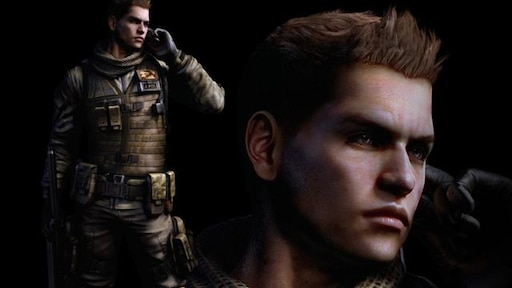
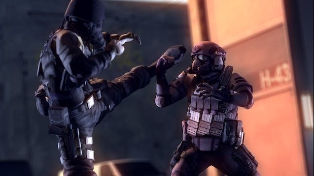

Leon S. Kennedy, ever the survivor. First introduced in Resident Evil 2, he quickly became a fan favorite! He appears in Resident Evil 4, Resident Evil 6, and other pieces of media including movies! Fun fact: He is naturally a brunette.
Ada Wong, the mysterious femme fatale. First appearing in Resident Evil 2, she makes appearances in Resident Evil 4 and 6, often appearing to help main characters behind the scenes. Fun Fact: In the Remakes of RE2 and RE4, she is voiced by Lily Gao, a canadian.
Sherry Birkin, the orphan! First Appearing in Resident Evil 2 as a little girl, the stole the hearts of fans across the world. Growing up to become a government agent and appears in Resident Evil 6. Fun Fact: Having been infected with Golgatha Virus, or G- Virus, she now has rapid healing properties.

Piers Nivans, the best sniper around!! First introduced in Resident Evil 6, he serves as a companion for Chris Redfield. One of the rising stars of the BSAA, he was personally selected by Chris to be a sniper. Fun Fact: He likes steak.
Chris Redfield, Boulder Puncher. First introduced in Resident Evil, he appears in several other games including, Re5, Re6, Re7, Re8, Re0, Re:Code Veronica, and more. Fun Fact: He went to Europe.
Helena Harper, government agent. She's currently only in one title, Resident Evil 6. Fun Fact: She hates Derek Simmons.
Jake, the son of Albert Wesker. Like Helena, he is only in One title, RE6. He serves as a companion for the beloved Sherry Birkin. Fun Fact: Due to his lineage, he is immune to the C-Virus.

HUNK, Human Unit Never Killed. First introduced in Resident Evil 2 in an unlockable minigame called "The Fourth Survivor" (spinoff being The Tofu Survivor) he quickly became a returning fan favorite. Despite not being a main character, he seems to always push through whatever situation he finds himself in.